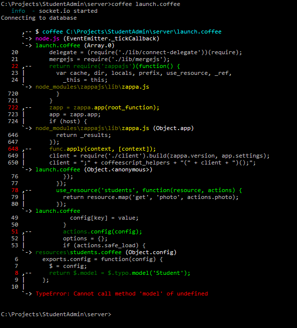

Colorful exception handler for Node.js with CoffeeScript support and improved nodemon/supervisor compatibility

Unfortunately registering with 'uncaughtException' has no effect until the next tick. So in order to benefit from the exception handler right away, you need to postpone execution of your code. You can either do this manually or use the convience version (see below)
Short version:
require('ansinception') ->
# Your code
Long version:
process.on 'uncaughtException', require 'ansinception'
process.nextTick ->
# Your code
Short version:
require('ansinception')(function() {
// Your code
});
Long version:
process.on('uncaughtException', require('ansinception'));
process.nextTick(function() {
// Your code
});